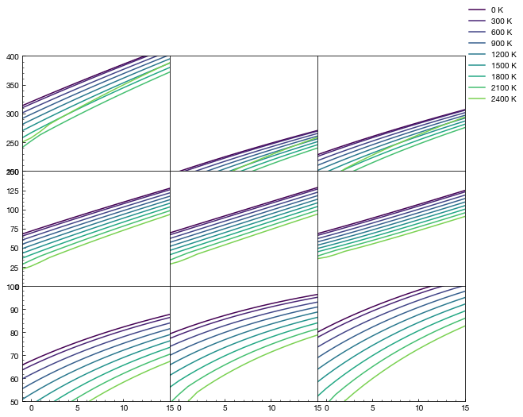
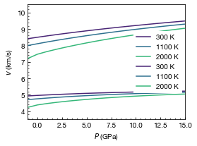
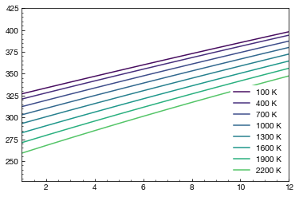
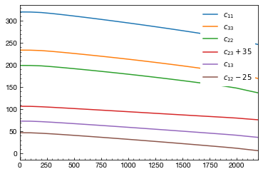
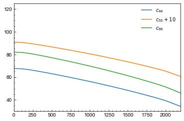

Plotting elasticity and accoustic velocities at high PT with qha-cij¶
This tutorial demostrate how to programmingly invoke qha-cij package in Python, and how to plot with it.
Load the configuration and run the Calculator¶
[1]:
import cij.core.calculator
calculator = cij.core.calculator.Calculator("_attachments/plotting/config.yml")
/Users/chazeon/Documents/Projects/qha-cij-2/cij/core/phonon_contribution/nonshear.py:119: RuntimeWarning: divide by zero encountered in true_divide
return h_div_k * (self.freq_array[nax,:,:,:] / self.t_array[:,nax,nax,nax])
/Users/chazeon/Documents/Projects/qha-cij-2/cij/core/phonon_contribution/nonshear.py:119: RuntimeWarning: invalid value encountered in true_divide
return h_div_k * (self.freq_array[nax,:,:,:] / self.t_array[:,nax,nax,nax])
/Users/chazeon/Documents/Projects/qha-cij-2/cij/core/phonon_contribution/nonshear.py:141: RuntimeWarning: overflow encountered in exp
return self.Q ** 2 * numpy.exp(self.Q) / (numpy.exp(self.Q) - 1) ** 2
/Users/chazeon/Documents/Projects/qha-cij-2/cij/core/phonon_contribution/nonshear.py:141: RuntimeWarning: overflow encountered in square
return self.Q ** 2 * numpy.exp(self.Q) / (numpy.exp(self.Q) - 1) ** 2
/Users/chazeon/Documents/Projects/qha-cij-2/cij/core/phonon_contribution/nonshear.py:141: RuntimeWarning: invalid value encountered in true_divide
return self.Q ** 2 * numpy.exp(self.Q) / (numpy.exp(self.Q) - 1) ** 2
/Users/chazeon/Documents/Projects/qha-cij-2/cij/core/phonon_contribution/nonshear.py:130: RuntimeWarning: overflow encountered in exp
return self.Q / (numpy.exp(self.Q) - 1)
/Users/chazeon/Documents/Projects/qha-cij-2/cij/core/phonon_contribution/nonshear.py:130: RuntimeWarning: invalid value encountered in true_divide
return self.Q / (numpy.exp(self.Q) - 1)
03 -> []
03 -> [11(1111), 12(1122), 12(1122), 22(2222)]
04 -> dict_keys([])
04 -> dict_keys([11(1111), 12(1122), 22(2222)])
03 -> []
03 -> [11(1111), 12(1122), 12(1122), 22(2222)]
04 -> dict_keys([])
04 -> dict_keys([11(1111), 12(1122), 22(2222)])
03 -> []
03 -> [11(1111), 12(1122), 12(1122), 22(2222)]
04 -> dict_keys([])
04 -> dict_keys([11(1111), 12(1122), 22(2222)])
Plotting elastic moduli¶
Here we prepare a plot for \(c_{ij}\) for forsterite.
First let’s setup matplotlib
[2]:
%matplotlib inline
import matplotlib
matplotlib.rcParams['figure.dpi']= 144
import matplotlib.pyplot as plt
import numpy
Prepare the color map from temperature to color
[3]:
from cij.plot import color_x
cmap = color_x(0, 3000)
Now we get the pressures p_array and temperature array t_array.
[4]:
from cij.util import units
p_array = units.Quantity(
calculator.qha_calculator.pressure_base.p_array,
units.rydberg / units.bohr ** 3).to(units.GPa).magnitude
t_array = calculator.qha_calculator.t_array
p_indices = calculator.qha_calculator.pressure_base.volumes < numpy.max([
volume.volume for volume in calculator.qha_input.volumes
])
p_indices = numpy.ones(calculator.qha_calculator.pressure_base.volumes.shape, dtype=bool)
[5]:
from cij.util import c_
fig, axes = plt.subplots(3, 3, sharex=True, figsize=(10, 8))
keys = {
c_(11): (0,0),
c_(22): (0,1),
c_(33): (0,2),
c_(12): (1,0),
c_(13): (1,1),
c_(23): (1,2),
c_(44): (2,0),
c_(55): (2,1),
c_(66): (2,2),
}
ylims = [(200, 400), (0, 150), (50, 100)]
for key, (j, k) in keys.items():
ax = axes[j, k]
moduli = units.Quantity(
calculator.pressure_base.v2p(calculator.modulus_adiabatic[key]),
units.rydberg / units.bohr ** 3).to(units.GPa).magnitude
for i in range(0, t_array.shape[0], 3):
t = t_array[i]
ax.plot(p_array[p_indices[i,:]], moduli[i, p_indices[i,:]], label=f"{t} K", c=cmap(t))
ax.set_ylim(*ylims[j])
ax.set_xlim(min(p_array), max(p_array))
ax.xaxis.set_minor_locator(matplotlib.ticker.AutoMinorLocator())
ax.yaxis.set_minor_locator(matplotlib.ticker.AutoMinorLocator())
if j != 2: ax.xaxis.set_visible(False)
if k != 0: ax.yaxis.set_visible(False)
fig.legend([
matplotlib.lines.Line2D([], [], color=cmap(t))
for t in t_array[::3]
], [f"{t} K" for t in t_array[::3]])
fig.subplots_adjust(wspace=0, hspace=0)
plt.show()

Plotting accoustic velocities¶
Next we plot primary velocities \(v_\text{s}\) and secondary velocities \(v_\text{p}\)
[6]:
plt.figure(figsize=(4, 3))
for velocity in [
calculator.pressure_base.primary_velocities,
calculator.pressure_base.secondary_velocities
]:
for i in [3, 11, 20]:
t = t_array[i]
plt.plot(
p_array[p_indices[i,:]],
velocity[i, p_indices[i,:]],
label=f"{t} K", c=cmap(t)
)
plt.legend()
plt.xlabel("$P$ (GPa)")
plt.ylabel(r"$v$ (km/s)")
plt.ylim(3.5, 10.5)
plt.xlim(-1, 15)
plt.show()

Plotting with plotter¶
[7]:
from cij.plot import Plotter
plotter = Plotter(calculator)
plt.figure()
for t in range(100, 2500, 300):
plotter.plot_cij_p(plt.gca(), 11, t, c=cmap(t), label=f"{t} K")
plt.xlim(1, 12)
# plt.ylim(200, 800)
plt.legend()
plt.show()

[8]:
from cij.plot import Plotter
plotter = Plotter(calculator)
plt.figure()
for t in range(100, 2500, 300):
_plot = lambda p_array, c_array: plt.plot(p_array, c_array, c=cmap(t), label=f"{t} K")
plotter.plot_cij_p_with(_plot, 11, t)
plt.xlim(1, 12)
plt.legend()
plt.show()

[9]:
from cij.plot import Plotter
plotter = Plotter(calculator)
plt.figure()
p = 0
for _key, _plot in [
(11, lambda p_array, c_array: plt.plot(p_array, c_array, label=r"$c_{11}$")),
(33, lambda p_array, c_array: plt.plot(p_array, c_array, label=r"$c_{33}$")),
(22, lambda p_array, c_array: plt.plot(p_array, c_array, label=r"$c_{22}$")),
(23, lambda p_array, c_array: plt.plot(p_array, c_array + 35, label=r"$c_{23}+35$")),
(13, lambda p_array, c_array: plt.plot(p_array, c_array + 0, label=r"$c_{13}$")),
(12, lambda p_array, c_array: plt.plot(p_array, c_array - 25, label=r"$c_{12}-25$")),
]:
plotter.plot_cij_t_with(_plot, _key, p)
plt.xlim(0, 2200)
plt.legend()
plt.show()
plt.figure()
p = 0
for _key, _plot in [
(44, lambda p_array, c_array: plt.plot(p_array, c_array + 0, label=r"$c_{44}$")),
(55, lambda p_array, c_array: plt.plot(p_array, c_array + 10, label=r"$c_{55}+10$")),
(66, lambda p_array, c_array: plt.plot(p_array, c_array + 0, label=r"$c_{66}$")),
]:
plotter.plot_cij_t_with(_plot, _key, p)
plt.xlim(0, 2200)
plt.ylim(30, 125)
plt.legend()
plt.show()


[ ]: